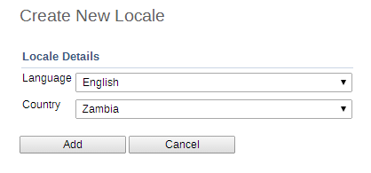

It is posible to create custom locales in DHIS2. In addition to the locales available through the system, you might want to add a custom locale such as "English" and "Zambia" to the system. This would allow you to translate metadata objects to local languages, or to account for slight variants between countries which use a common metadata definition.
|  |
The locale is composed of a language along with a country. Select the desired values and press "Add". This custom locale will now be available as one of the translation locales in the system.